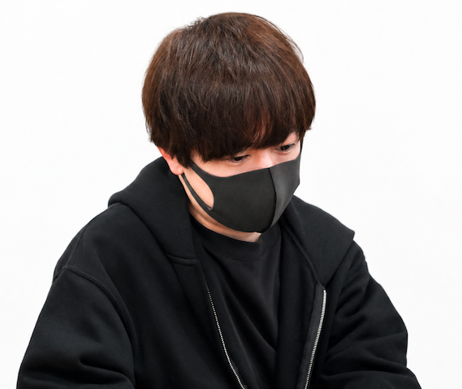

Webデザイン
情報設計、ワイヤーフレーム、ビジュアルデザインまで。目的に合わせて、迷わず伝わる画面をつくります。
UI DESIGN / FIGMA / RESPONSIVEブランドの空気と、使う人の気持ちを大切に。
デザインから実装まで一貫して制作しています。

BEHIND THE GALLERY
DESIGNING CLARITY. BUILDING EXPERIENCES.
はじめまして、龍成です。
ホームページ・LP制作を中心に、デザインから実装まで一貫して向き合うWebエンジニアです。
見た目の美しさだけでなく、「誰に、何を、どう届けるか」を整理することを大切にしています。Figmaの意図を丁寧に読み取り、使いやすく、崩れにくいWebサイトを制作します。
まだ形になっていないアイデアも、会話を重ねながら一緒に整えていきます。
できることを見る目的や課題がまだ曖昧でも大丈夫です。
必要な情報を整理し、公開まで伴走します。
情報設計、ワイヤーフレーム、ビジュアルデザインまで。目的に合わせて、迷わず伝わる画面をつくります。
UI DESIGN / FIGMA / RESPONSIVEデザインの意図をくみ取り、HTML・CSS・JavaScriptで丁寧に実装。動きや表示速度にも配慮します。
HTML / CSS / JAVASCRIPT / REACT既存サイトの課題を整理し、見せ方や導線を再設計。小さな修正から全体リニューアルまで対応します。
AUDIT / REDESIGN / OPTIMIZATIONLET’S CREATE THE NEXT EXPERIENCE
ホームページやLPの制作・リニューアルについて、
小さな相談からお気軽にどうぞ。
ryuuseiworks628@gmail.com